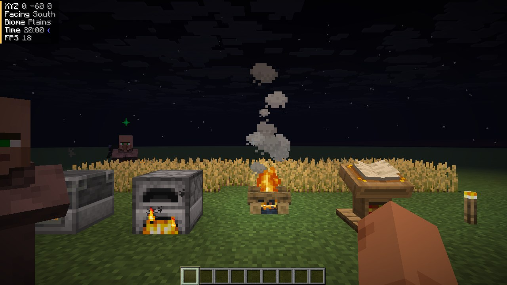

Minecraft,
just nicer.
Living particles, real ambient sounds, double doors, right-click harvest, a polished HUD and a better death screen. Still feels 100% vanilla.

A real in-game screenshot with Vanilla Refined installed.
Everything you already know, polished
No new items, no new blocks, no weird mechanics. Just the game you love, with more life in it.
Animated containers
Furnaces burn with a busy fire while smelting, brewing stands bubble, hoppers glint as items pass and lecterns lift glowing letters off their pages.
World & blocksDouble doors
Open one side of a double door and the other opens with it. Sneak to open just one. Iron doors still need redstone.
World & blocksFalling block dust
Sand and gravel leave a dust trail as they drop and burst into a puff of block dust when they land.
World & blocksFlickering lights
Torches, lanterns and candles flicker softly, and the flame leans away when you walk past.
World & blocksItem frames
Rotating an item sparkles, and glow item frames pulse with a soft glow.
ItemsCold breath
In snowy biomes every player breathes out little white clouds.
Player feelAmbient sounds
Birds sing near trees by day, crickets chirp at night, wind howls up high and water drips with an echo in caves. All 12 sounds are new.
SoundDeath effects
When a mob dies, its soul drifts up while the body crumbles into dust.
MobsVillager emotes
Villagers react to you: hearts when you hold emeralds, notes when they're happy, anger when they're hurt.
MobsRight-click harvest
Right-click ripe crops to harvest and replant in one go. Works on wheat, carrots, potatoes, beetroot and nether wart.
FarmingGrowth sparkle & bone meal pop
Fully grown crops sparkle so you can spot them, and bone meal goes off with a satisfying chime and burst.
FarmingAnimals eat dropped food
Drop wheat, carrots or seeds and nearby animals walk over and eat it, heal up and fall in love. Sheep show off when their wool grows back.
FarmingHotbar polish
A golden glow slides smoothly to your selected slot and pulses gently, and your offhand slot gets a matching frame.
HUDInfo HUD
Coordinates, facing, biome, a day/night clock and FPS in a clean panel that slides in and out with J.
Armor & tool durability
Your armor and held tool sit next to the hotbar with green, yellow or red durability bars.
HUDSmart toasts
Sliding notifications: "Pickaxe almost broken", "It's getting dark", "Inventory full".
HUDBetter death screen
Shows exactly where you died, the dimension and your level, with a button to copy the coordinates.
Quality of lifePlay with the features
Little live demos of what changes in game. Click, hover and press keys.
🕯 Flickering lights
Flames flicker and lean away as you pass.
🌾 Sparkle & harvest
Ripe crops sparkle. Right-click to harvest and replant.
🎯 Hotbar polish
The golden glow slides smoothly between slots.
🚪 Double doors
One click opens both sides.
Facing North
Biome Cherry Grove
Time 09:41 ☀
FPS 144
14 uses left
📍 Info HUD & toasts
Toggle the info panel with J. Notifications slide in from the corner.
in Overworld • level 27
Your items are waiting there
☠ Better death screen
Never lose your stuff again.
🔊 New ambient sounds
Click a sound to hear a preview, made in your browser like the sounds in the mod.
Make it yours
Every feature can be switched off in config/vanillarefined.json.
{
"animatedContainers": true,
"doubleDoors": true,
"flickeringLights": true,
"ambientSounds": true,
"ambientVolume": 0.6,
"rightClickHarvest": true,
"animalsEatDroppedFood": true,
"hotbarPolish": true,
"infoHud": true,
"betterDeathScreen": true,
"…": 20 toggles in total
}
Get Vanilla Refined
Free. Works in singleplayer, LAN and on servers.
Fabric Loader 0.19+ and Fabric API for Minecraft 26.2.
Put the jar in .minecraft/mods.
Start the game. Press J for the info HUD.
Questions
Does it add new blocks or items?
No. Vanilla Refined only polishes what's already in the game, so worlds stay 100% vanilla-compatible.
Does it work on servers?
Yes. Visuals, sounds and the HUD work for you anywhere. Gameplay features like double doors, right-click harvest and animals eating dropped food need the mod on the server too (in singleplayer and LAN that's automatic).
Will it slow my game down?
No. The effects reuse Minecraft's own particles and only run near you. You can turn anything off in the config.
Is there a Forge version?
Not yet. Version 1.0 is Fabric only.
What's Vanilla Refined+?
A bigger follow-up with even more polish. It's coming later. Vanilla Refined stays the light, pure-vanilla one.